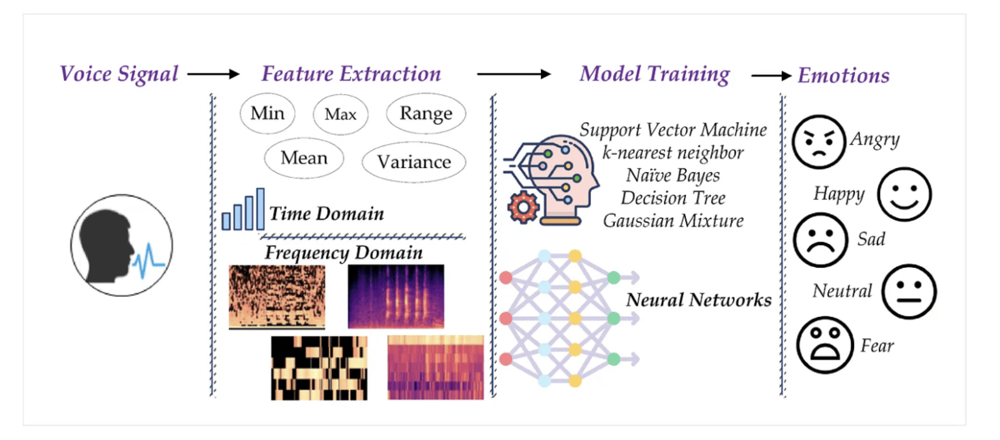

Featured Projects

Speech Emotion Recognition
Spearheaded real time emotion detections from speech using raw audio files and designed a neural network classifying 6 emotions.
Python
TensorFlow

Calving Detection
Successfully detected calving in cows 2 weeks before actual calving date using ML and applied quantization for efficient deployment.
Python
TensorFlow
Autonomous vehicle safety system
Determined whether a person has a control over his car by calculating steering torque resistance and applied deep learning to detect the person’s awareness.
Technology 1
Technology 2